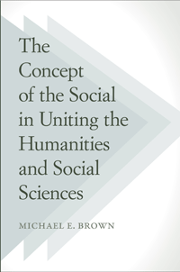

How to reunify the humanities and social sciences
How to reunify the humanities and social sciences


 How to reunify the humanities and social sciences
How to reunify the humanities and social sciences

|  |
The Concept of the Social in Uniting the Humanities and Social SciencesMichael E. Brownpaper EAN: 978-1-43991-016-0 (ISBN: 1-4399-1016-2) |
"Brown’s book is an ambitious and profound rethinking of the foundational underpinnings that run through and orient the social sciences and the humanities. With a philosophical rigor rare in the social sciences and a grasp of the complexity of society uncommon in the humanities, he discloses what is at stake in reclaiming the social as their common object. Brown applies a meticulous and attentive erudition across an incredible range of literatures, disciplines and conversations. This is the masterwork of a searingly original and learned voice."
—Randy Martin, Professor and Chair of the Department of Art and Public Policy at New York University, and author of Financialization of Daily Life and Under New Management: Universities, Administrative Labor, and the Professional Turn
In this book, Michael Brown provides original and critical analysis of the state of the social sciences and the humanities. He examines the different disciplines that address human affairs--from sociology, philosophy, political science, and anthropology to the humanities in general--to understand their common ground. He probes the ways in which we investigate the meaning of individuality in a society for which individuals are not the agents of the activities in which they participate, and he develops a critical method for studying the relations among activities, objects, and situations.
The Concept of the Social in Uniting the Humanities and Social Sciences restores the centrality of sociality to all disciplines that provide for and depend on the social dimension of human life. Ultimately, he establishes a theory of the unity of the human sciences that will surely make readers rethink the current state and future of theory in those fields for years to come.
Excerpt available at www.temple.edu/tempress
"The argument advanced in this book is that the social is a fundamental, irreducible given that should be the central object of inquiry in the social sciences and humanities. Brown makes this case in what he surely views as a major corrective to these broad scholarly fields."
—Choice
“[A]n ambitious project that essentially attempts to bridge major and disparate discourses within Western thought including sociological, ontological, epistemological, political, and theories of action. The work encourages the reader to carefully consider the nature of inquiry, in those fields, and raises some important questions about their methodological assumptions…. There are several valuable insights that can be gleaned from Brown’s work…. [H]is commentary on diverse sources is illuminating… Overall, the book raises a few thought-provoking points about social inquiry.”
—Marx and Philosophy
"I was...impressed by his erudition.... Brown advocates the unification of different disciplines within the humanities and social sciences; furthermore, he intimates that different disciplines have more in common than practitioners are aware. An adventitious packaging of these discrete arguments enables Brown to suggest how unification can be achieved.... [His] arguments are given wide scope, using a large range of disparate sources."
—Contemporary Sociology
Introduction: What Is Human about Human Affairs?
I SocialIty: The Problem of Definition
1. The Urgency of Defining the Social
2. Society as a Basic Fact
3. Dependence and Autonomy
4. The Certainty of the Social as the Basic Fact
5. The Sociality of Agency
6. Models, Theory, and Theorizing
7. Theorizing
8. Historicism and Its Alternative
9. Social Facts, Situations, and Moral Stakes
II Social Action
10. Can “the Social” Be a Proper Object of Theory?
11. Further Problems in Theorizing the Social
12. Social Action as Action
13. The Self of the Actor
14. Self and Situation
15. Self and Agency
16. Social Action Reconsidered
III Subjects and Situations
17. Overview
18. Causes of Failure in the Social Sciences
19. Objects and Their Subjects
20. The Positive Sense of “Situation”
21. Practices, Situations, and Inter-subjectivity
22. Criticism, Inter-subjectivity, and Collective Enunciation
23. Criticism and Human Affairs
24. Collective Enunciation
25. Subjectivity and Objectivity
26. Summary, Reprise, and Transition
Acknowledgments
Notes
References
Index
Michael E. Brown is Professor in the Department of Sociology and Anthropology at Northeastern University and former Professor of Sociology at Queens College and the Graduate School of the City University of New York. He is author of The Historiography of Communism, Collective Behavior, and The Production of Society as well as New Studies in the Politics and Culture of U.S. Communism.
Sociology
Philosophy and Ethics
Political Science and Public Policy
© 2017 Temple University. All Rights Reserved. This page: http://www.temple.edu/tempress/titles/2268_reg.html.